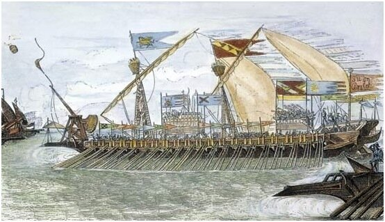

Мы в книге Промысла читаем по складам;
Нам темен смысл ее: за буквой букву ловим.
Начнем ли толковать, мы только пустословим.
Нам детям не вполне та грамота дана:
Про нас, но не при нас написана она.
П. А. Вяземский. Лес горит.
Сегодня мы начнем рассмотрение темы, к которой еще не раз будем возвращаться, обсуждая ее на разном уровне: теоретическом, практическом, биомеханическом и др. Рассмотрение это начнем с краткого исторического обзора, чтобы в дальнейшем за соснами не потерять леса. Сразу необходимо предупредить, что единства мнений по основным проблемам этой темы у современных исследователей нет. Поэтому по ходу изложения придется предупреждать, где то или иное суждение основано на фактах, а где является гипотезой автора.
Галера, как мы неоднократно отмечали, ходила и на веслах, и под парусом. Но именно весла являлись raison d'etre галеры, сделали ее тем, чем она проявила себя в морской истории. На веслах галера шла в бой, весла были основным компонентом главного оружия галер до изобретения пороха – таранного удара. Гребцы, и в первую очередь «галерные рабы», стали символом тяжкого морского труда.

На протяжении всей истории галер делались попытки различными возможными способами усовершенствовать систему гребли. Естественным путем такого совершенствования являлось увеличение «мощности двигателя» галеры. Но силы отдельно взятого гребца были ограничены, поэтому стали искать способы увеличения числа гребцов. Очевидный путь – увеличить количество гребцов, сидящих вдоль каждого борта – имел явные ограничения: невозможно было увеличивать длину галеры ad infinitum. Тогда пришла идея увеличить число гребцов – сначала удвоить, а затем и утроить их общую численность – размещая их на разных ярусах. Но и такое увеличение не могло продолжаться бесконечно. Дальнейшим усовершенствованием стал переход от размещения гребцов поярусно к размещению их на одном уровне, но по несколько человек на банке. А так как каждый гребец по-прежнему греб одним веслом, пришлось банку разместить не под прямым углом к диаметральной плоскости, а под косым. Так родилась система гребли alla zenzile (или alla sensile), которая стала господствующей системой у венецианцев, законодателей галерной моды того времени (галера этой системы изображена на рисунке выше). Не известно точно, изобрели эту систему сами венецианцы, или переняли ее от византийцев. Известно только, что в Византии стандартные дромоны были биремами (по два гребца на банку), а у венецианцев – триремами (на каждой банке по три гребца, каждый из которых греб своим веслом) и изредка – квадриремами. (Сразу отмечу, что разъяснения, данные в скобках, подлежат дальнейшему обсуждению в ходе развития этой темы.) Развитие этой системы гребли осуществлялось постепенно. Впервые ее появление отмечено в XII веке и просуществовала она до XVI века. Все попытки дальнейшего увеличения числа гребцов на одной банке оказались безуспешными. Самая известная попытка такого рода была предпринята знаменитым венецианским гуманистом Веттором Фаусто, который предложил проект квинкеремы. О Фаусто и его проекте мы в самое ближайшее время поговорим отдельно.
Решением возникших проблем стало появление новой системы гребли, при которой все гребцы на одной банке гребут одним веслом, более крепким и длинным, чем весла при прежней системе гребли. Новая система, получившая название a scaloccio, просуществовала до конца эпохи галер (изображение галеры этой системы приведено в предыдущем посте). Переход от малых весел (remi piccoli) к большим (remi grandi) был медленным и занял почти половину шестнадцатого столетия. Тем не менее, еще в конце XVI века находились моряки, не воспринимающие новый метод.
Темп гребли всем гребцам на данной банке задавал загребной (у венецианцев его называли pianero – «ведущий»), находящийся на позиции, наиболее удаленной от борта. Он контролировал весло, заставляя всех остальных гребцов на данной банке грести в избранном темпе. Это оказалось особенно полезным в эпоху, когда гребцы-добровольцы почти повсеместно были заменены на рабов и каторжников.
Параллельно с совершенствованием системы гребли происходили, конечно, и другие изменения: появилась артиллерия, вызвавшая изменение конструкции корпуса, улучшалось парусное вооружение и росла площадь парусов, и др.
Невозможно закончить это краткое введение в системы гребли на галерах, не сказав несколько слов о «человеческом факторе». Сейчас уже нет сомнений, что имелись случаи, когда прикованные каторжники и рабы гребли по системе alla zenzile, хотя эта система была разработана для свободных гребцов. Но в связи с тем, что обе ноги были прикованы, необходимо было внести изменения в технику гребли, перейдя к более коротким и частым гребкам. Некоторые командиры галер даже предпочитали этот стиль гребли традиционному.
Новая система a scaloccio позволила легче подстраивать каждого гребца под темп, задаваемый загребным. Но пришлось заменить способ, которым приковывались гребцы-невольники: заковывали в кандалы уже не обе, а только одну ногу.